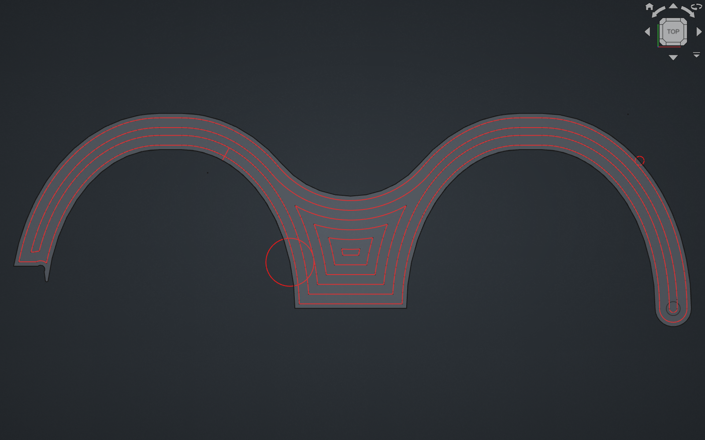
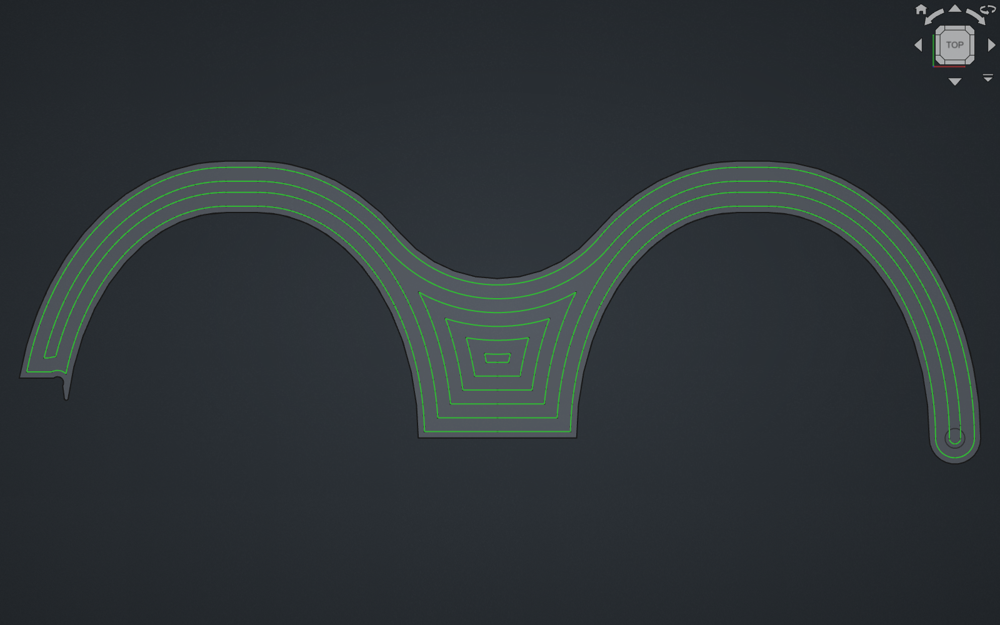
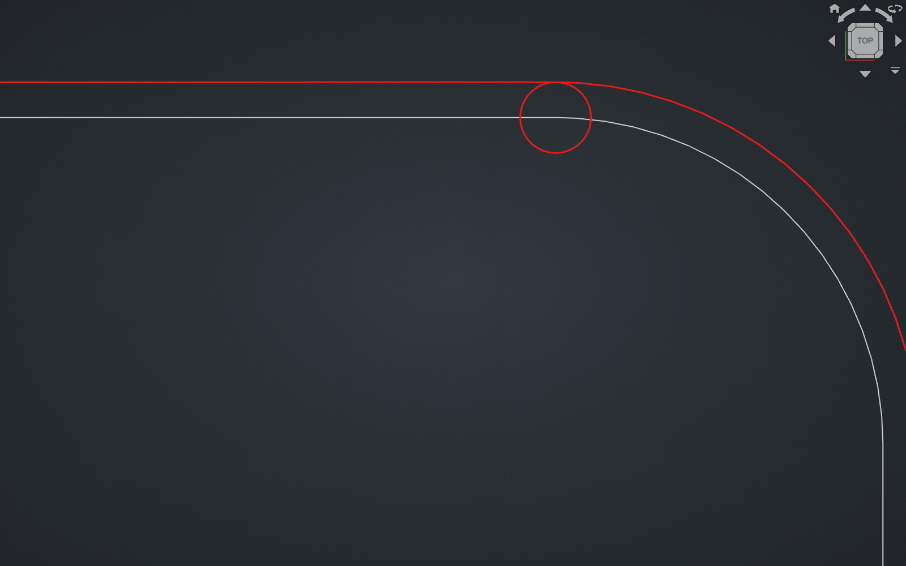
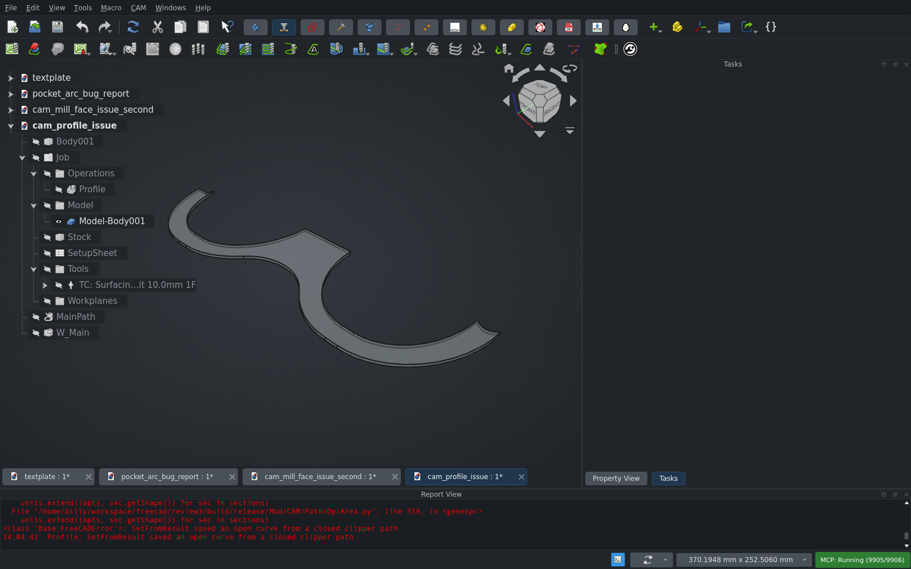
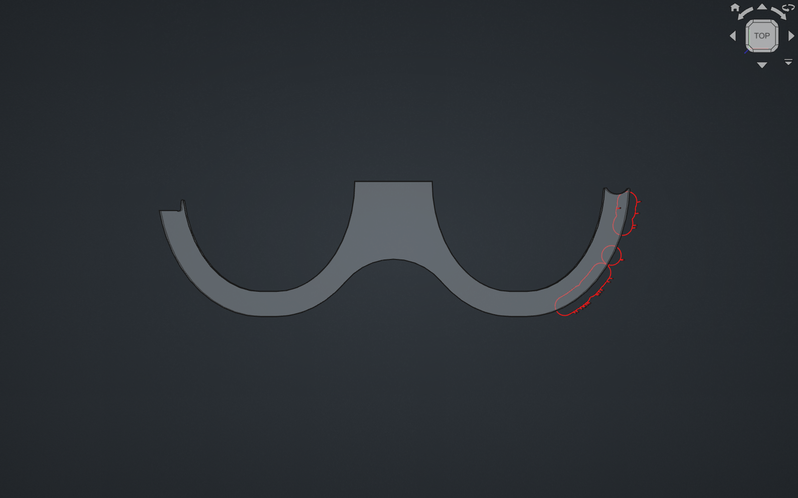
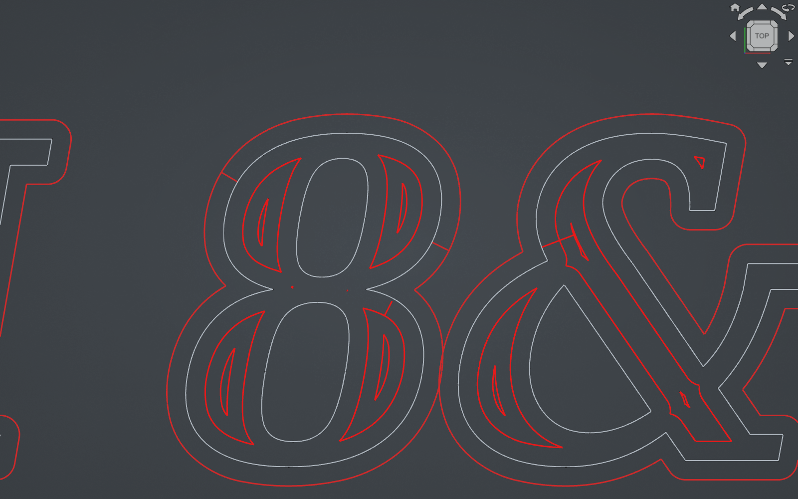
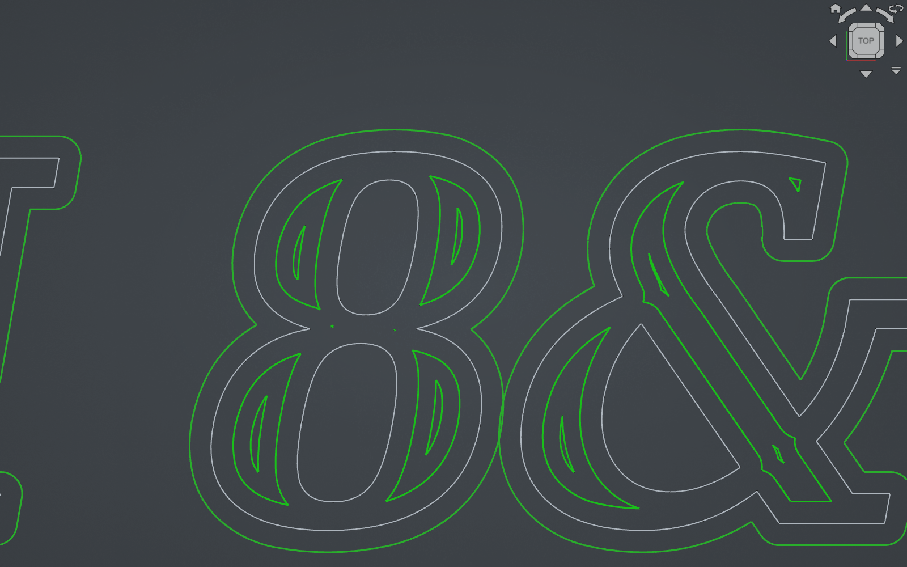

CAM unit tests with the PR applied: Ran 1990 tests · OK (skipped=13, expected failures=4)







area.set_clipper_scale() is removed (renamed), the default point tolerance of the area module changes, and offsets now raise hard errors instead of returning an open curve.PR head f2f0d2f on main dc876b4 (2026-10-01). All of this PR is C++ (libarea + App/Area.cpp), so cam_ab (which only swaps Python) can't compare it. For the main side I used a second build whose src/Mod/CAM/libarea and src/Mod/CAM/App are byte-identical to main dc876b4 (checked with git diff). Both sides ran headless, one at a time under an 8 GB cap: open the file, touch() and recompute every op 2–6 times, then save stats and G-code. The GUI checks used the PR build.
GUI vs headless matters for this PR. The 3D view tessellates the model, and Path.Area's projection (makeSections(project=True)) gives different results on a tessellated shape. On jffmichi's Profile part it gives 1 face without a mesh and 3 overlapping faces with one. A plain shape.copy() gives 1 face; copy().tessellate(0.5) gives 3. So every A/B was also run with the Job models tessellated (shape.tessellate(0.1)) and with this machine's arc accuracy (0.01016 mm), to match what users see in the GUI.
Metrics per op: command count, feed length, out-and-back spikes (a feed move immediately retraced in the opposite direction), tiny moves (< 1 µm), back-to-back arcs that close a full circle, and the number of distinct outputs across repeated recomputes.
Unit tests: the full CAM suite passes (Ran 1990 tests, OK (skipped=13, expected failures=4)). TestArcFitting gains regression tests built from jffmichi's file. They also check that the output is identical for every rotation of the input polygon.
| Issue | Result |
|---|---|
| #32677 (MillFace "No parent edge found") | Fixed for jffmichi's follow-up files. The original crash no longer happens on current main either; the original file gives the same 450 mm path on both sides. |
| #32993 (offsetWire little circle) | Fixed. In tarman3's script, main's offset wire gets two r = 1 mm semicircles (174.4 mm → 168.2 mm on the PR, 0 circles). jffmichi's Profile file is now stable (main gave 2–3 different outputs). The un-discretized call from the issue still raises BRep_API: command not done on both sides (bad face, as the issue says). |
| #33013 (G-code wrong in simulation) | Not reproduced. On current main the reporter's A.FCStd gives no bad arcs. The PR only drops 20 zero-length duplicate moves (874 → 854 commands, same 13084.5 mm). The attached TEST_BIT.nc is a plain square profile with nothing wrong in it. |
| #33031 (B-spline pocket extra lines) | Fixed. Main's Pocket_Shape001 has a 1.2 mm out-and-back spike (G1 X24.391 Y16.959 and straight back). The PR has none (194 → 187 commands). |
| jffmichi's PR-comment Profile file (claimed fixed) | Not fixed in the GUI, see the finding below. |
jffmichi's Profile with no base geometry fails in the GUI with "SetFromResult saved an open curve from a closed clipper path"
The PR description says this file is fixed. Headless it is (one closed profile, 608 commands, stable). In the GUI the Profile goes Invalid with the error above. Why: Profile with no base uses PathUtils.getEnvelope() of the model. In the GUI the model shape carries the display mesh, and the projection then gives a compound of 3 overlapping faces instead of 1. The extruded envelope is an invalid compound of 3 solids, and the PR's new closed-curve check throws on it.
Same inputs on main (tessellated model, 0.01016 mm accuracy): the projection breaks into 16 faces / 35 edges. Main then outputs a broken fragment of a profile cutting through the part, and a different one on each recompute (164–224 commands). So main is wrong too; the PR now fails loudly instead (jffmichi said he prefers that). The root cause is in the projection, before clipper. This is the "duplicate and wrong wires before this ever reaches clipper" the author mentions in the thread, and the display mesh is what makes it differ between GUI and headless.
Related: at arc accuracy 0.005 mm the PR fails on this file even headless without a mesh, while main returns 82 commands (quality not checked).
Repro:
cam_profile_issue.FCStd (PR comment 5881303523) in the GUI.Profile: SetFromResult saved an open curve from a closed clipper path.tessellate(0.5) on the Job model's Shape before the recompute.| Model | Ops | Result |
|---|---|---|
| pocket-island-variants (all Pocket patterns, Profile variants, ramps, MillFace) | 27 | Pocket and MillFace byte-identical. Profile ops: same lengths, but main flips the start corner between (−3, 0) and (0, −3) across recomputes (the known "plunge point flip" issue), while the PR always picks (0, −3). That is a fix. Same with tessellation. |
| class-tray A | 3 | identical, plain and tessellated |
| twp-block job (5-axis, 3+2, Deburr, Engrave, Helix, Adaptive, dressups) | 18 | all byte-identical (Face Top fails headless on both sides, unrelated) |
| own text plate (DejaVu Serif Bold Italic "CAM 8&@ Sgq%" cut 2.5 mm into a filleted plate; Pocket Shape on 12 letter floors, Profile of outline, Profile of letters, 1 mm tool), accuracy 0.005 / 0.01016 / 0.0254, tessellated | 3 | main: Pocket 21–25 spikes, letter Profile 5–20 spikes (0.4–0.9 mm, the Profile ones are exactly tool-radius long, back to the source vertex), letter Profile changes per recompute. PR: 0 spikes, stable, no errors at any accuracy. Outline Profile identical. |
Issue files (tessellated, accuracy 0.01016, 3 recomputes each):
| File / op | main: cmds, spikes, tiny moves, distinct outputs | PR |
|---|---|---|
| #32677 jffmichi MillFace | 970, 3 spikes (up to 12.1 mm), 159, 2 | 694, 0, 15, 1 |
| PR-comment MillFace (second) | 980–984, 1 spike (5.1 mm), ~212, 3 | 727, 0, 30, 1 |
| #32993 jffmichi Profile | 21, 0, 3, 2 | 20, 0, 2, 1 |
| #33031 Pocket_Shape001 | 194, 1 spike (1.2 mm), 5, 1 | 187, 0, 0, 1 |
| #33013 Pocket_Shape | 874, 0, 32, 1 | 854, 0, 12, 1 |
| PR-comment Profile (no base) | 164–224, broken, 3 | error (op Invalid) |
The tiny moves left on the PR are ~1e-6 mm G1 stubs after arcs (rounding), the same kind as on main. Harmless.
area.set_clipper_scale() removed from the Python area module, renamed to set_clipper_scale_and_point_tolerance(), which also sets the point tolerance. Any script or addon calling the old name breaks. No users in the FreeCAD tree or in installed addons here. (tested)Point::tolerance, now 1 / clipper_scale). This only matters for the raw area module (Path.Op.Util.offsetWire, used by Deburr); Path.Area ops override it with 1e-7 anyway. Deburr on the TWP block is byte-identical. (tested)NaiveOffset/Offset/Thicken … produced an open curve, SetFromResult saved an open curve from a closed clipper path) where main returned a path. The only trigger I found is the finding above; 51 other ops were fine. (tested)CArea::Offset input curve is open printed with fprintf(stderr), so it goes to the terminal, not the Report view. (not tested)Path.Path(gcode_text) on a 194-line G-code file with ; type:'linking' comments did not return within 25 s in the GUI (seen while loading main's G-code for pictures; worked around by building the commands myself). Not investigated.Path.Geom.edgeForCmd() draws some arcs with a µm chord and a 0.08° clockwise sweep as near-full circles. The G-code is correct (the sweep is tiny); only that helper's rendering is wrong. Same on main.